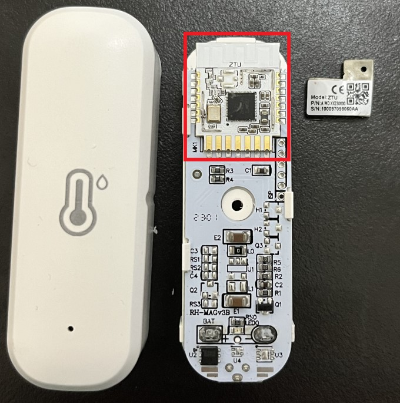

温度センサーを起点にスマートロックを不正開錠してみた～ZigBeeデバイスに対する攻撃手法～

要約: ZigBeeネットワークに間接的に接続されたスマートロックを不正開錠できた。格安センサーとZigBeeネットワークの組み合わせは危険。この記事では1つのセキュリティの綻びから、スマートロックが不正開錠されるまでの流れを解説する。
はじめに
しゅーとです。もはやブームが去ったであろうZigBeeに最近初めて触れたので、今更ながら投稿します。
みなさんのご家庭はスマートホーム化していますか？最近はスイッチボットやTP-Link Tapo、プラススタイル製品などで温度センサーや、指ボット、スマートロックを導入している方も多いかもしれません。
スマートホーム化をさらに突き詰めていくと、ZigBeeを使ったセンサーがAliExpressに格安で売られていることに気づきます。
ZigBeeハブという機器を利用することで、プログラム上でZigBeeセンサーの値を読んだり、それを使ってホームオートメーションを構築することができます(湿度が下がったら加湿器をつけるなど）。
これらのホームオートメーションをゼロから構築するのは大変ですが、Home Assistantというソフトウェアをラズパイにインストールし、ZigBeeハブを接続することで、簡単にスマートホームが実現できます。
少しでもスマート化ができるとどんどんスマート化したくなるもの。今度はさらにZigBeeボタンをHome Assistantに接続し、ボタンを押すことで自動でスマートロックを開錠するように設定しました。

ちなみにボタンを押して開錠したときのHome Assistantのログを見るとこんな感じになります。
もしドアが二重ロックだったら手で2つとも開錠するのは大変だし、ワンタッチで開くと便利だよね！
・・・このようにスマートロックのようなクリティカルな機器を気軽にオートメーションに組み込んでも大丈夫なのでしょうか。また、5chやブログを調べてみると、スマートホーム化でこういったことを行う愛好家も少なくないようです。
このセキュリティの懸念を検証するためZigBeeの世界に深く潜り込んだ結果、条件が厳しいものの実際に不正開錠に成功しました。この記事では不正開錠までの流れを記載します。
登場人物とシナリオ
スマートロックはラズパイとBluetoothで接続されています(厳密にはESPHome経由)。Bluetooth通信では開錠の際にAES共通鍵を用いた暗号化通信が行われており、通信鍵の漏洩もなく安全な通信経路という前提です。
またラズパイはZigBeeハブを利用してZigBeeネットワークにも属しています。ZigBeeネットワーク内の降雨センサーや温度センサーからの情報を読み取ったり、ZigBeeワイヤレスボタンの信号をもとにBluetooth経由でスマートロックの開錠を行います。
温度センサーはベランダや庭にも設置しています。特に意味はないけど「外寒いね～」とか雑談するときに使います。
そして攻撃者のゴールはスマートロックの開錠です。家にあるボタンを押すことでスマートロックが開錠されることが攻撃者は既にわかっているとしましょう。そのため攻撃者がスマートロックを開錠するボタンと同じ通信を出すことができればゴールとなります。さて、どうすればいいでしょうか。
ZigBeeとセキュリティ機構
まずZigBeeネットワークについて軽く解説します。
ZigBeeは2.4GHz帯を利用する近距離無線通信規格で、超低電力がウリです。物理的な電気規格はIEEE 802.15.4を利用しており、そのおかげもあってZigBeeに対応するマイコンも結構あります。
ZigBeeは用途に合わせて様々な通信プロファイルがありますが、中でも家庭で使われるのは「HA」プロファイルです。Home Automationの略で、その名前ズバリです。ZigBeeネットワークは、マスターとして役割を果たすコーディネーターと、センサーなどのデバイスから成り立ちます。
通信上のセキュリティも考えられています。現在主流のZigBee 3.0では、通信データの暗号化に2種の128bitの暗号鍵が使われます。ZigBeeネットワーク全体で共通の値であるネットワークレイヤ(NWK)の「Network Key」と、その上のレイヤであるアプリケーションレイヤ(APS)の「Link Key」です。もちろんNetwork Keyの値はネットワークによって異なります。また暗号通信上では、ヘッダに存在するフレームカウンタによってリプレイ攻撃から保護されます。
ここらへんの規格については「IoTソフトウェア無線の教科書」に詳しく解説されているほか、著者の上松さんが素晴らしいスライドを残してくれているのでぜひこちらをご覧ください。
ZigBeeにおいて重要なのが鍵の交換方法です。家庭用のデバイスはネットワークの加入時(ペアリング時)にコーディネーターからNetwork Keyを受け取ります。鍵交換時の初期通信は暗号化はされているものの、その暗号鍵(Link Key)は ZigBeeAlliance09という値でハードコーディングされています。つまり標的が新しくデバイスをペアリングするとき、攻撃者はその通信を盗聴することでZigBeeネットワークのNetwork Keyを窃取することが可能なのです。（一昔前の規格って感じ）
とはいっても攻撃者がペアリング時の通信を盗聴するなんて超限定的なタイミングなので、今回はペアリング時の鍵盗聴は無視します。
コラム: 常時ペアリングモードの危険性
デバイスのペアリングは以下の流れで行われます。
- コーディネーター上でペアリングモードに設定する
- デバイスのボタンを長押ししてペアリング要求をする
- 要求を受け取ったコーディネーターから鍵の配布が行われネットワークに加入
- 少し経つとコーディネーターが自動的にペアリング拒否モードに戻る
コーディネーターはデフォルトでは基本的にペアリング拒否モードになっていて、ユーザの操作によって数分間のみペアリングモードに移行します。しかし設定次第では常にペアリングを受け付けるトンデモ状態にできます。その場合は攻撃者が適当なデバイスを標的の付近にもっていくことで、ペアリングを通じてNetwork Keyを窃取することが可能です。こんなヤバい状態の家もあるとかないとか。
ボタン通信の盗聴
攻撃者としてまず行うのは、ボタンを押したときのZigBee通信を盗聴することです。ここで攻撃者は何食わぬ顔でスニファを標的の家の近くで起動します。（もうここで非現実的だろとか言わないで）
ZigBeeスニファとしてオススメなのは、安定していて一番安く手に入るnRF52840-dongleです。1600円です。私が以前書いたボルテージフォールトインジェクションの記事で標的になったハードウェアです。この記事を読んでない人はぜひ読んでください（宣伝）。

スニファで盗聴すると、以下のようにZigBee通信が取得できます。
キャプチャそのままだとNetwork Keyがないため、どれがボタンの通信なのか、そしてボタンの通信がどのようなフォーマットなのかわかりません。仮にボタンの型番を特定したとしても、Network KeyがわからないとZigBeeネットワークのデバイスとしてのデータを作れません。
そのため攻撃者はおもむろに家の周囲を見渡します。
おっと、温度センサーがありますね！デバイスはZigBeeネットワーク内で通信するために、必ずNetwork Keyをデバイス内に保持しておく必要があります。仮にセンサーのCPUにセキュリティモジュールやフラッシュ暗号化などの耐タンパー機構がない場合、ハードウェアハッキングによりフラッシュから鍵が抽出される可能性があります。
温度センサーを見つけた攻撃者は家の人に見つからないようにセンサーを拝借することにしました。（※窃盗）
センサーから鍵の抽出

センサーを早速バラしてみると、様々な部品のなかに大きいメインモジュールを発見しました。このモジュールはTuya製のZTUモジュールというもののようです。またモジュールのシールドを剥ぐと、マイコンはTuyaのZ2チップであることがわかります。ZTUおよびZ2チップに関しては簡単なピンアサインとハードウェア特性がWeb上に公開されています。
ここから何とかしてフラッシュの内容をダンプする必要がありますが、Z2チップに関する詳細なデータシートは見当たりません。ただピンアサインをよく見ると、SWSという見慣れないピンがあることがわかります。
ピンアサインの説明をみると「Burning pin, which corresponds to SWS (Pin 5) of IC」とのことで、ファームウェアのフラッシュ用に用いられるピンのようです。また、Z2チップの開発ドキュメントから、Z2チップの実態はTelinkというメーカーのTLSR8258シリーズであることがわかります。
TelinkのSWSピンについて調査すると、Telink独自の「S-Wire」と呼ばれる1線UARTのピンであることがわかりました。また有志によってS-Wireプロトコルが解析されており、以下のPythonスクリプトを用いてフラッシュの読み書きが可能です。
リポジトリのドキュメントに沿って配線します。ご家庭にある安いCH341Aプログラマでいけます。
コラム: まるで双子の温度センサー
AliExpressで購入できる温度センサーは、表面の絵柄が若干違う2種類があります。
1つはモデル名「WSD500A」というもの。もうひとつは「ZTH01/ZTH02系」。使われるモジュールはどちらもTuyaのZTUですが、基板構成が少し異なっています。WSD500Aはフラッシュ読み書きのために必要なパッドがピンとして引き出されており便利です。
それぞれのモデルに関するピンアサインを調査したので載せておきます。

配線後、タイミングを合わせてRSTピンの電圧を下げ上げしてフラッシュプログラムを実行します。
user@ubuntu:~/ZigBee/TlsrComSwireWriter$ sudo python3 TLSR825xComFlasher.py -p /dev/ttyCH341USB0 -r -t 100 -d rf 0x0 0x100000 wsd500a.bin
=======================================================
TLSR825x Flasher version 00.00.05
-------------------------------------------------------
Open /dev/ttyCH341USB0, 921600 baud...
Reset module (RTS low)...
Activate (100 ms)...
Debug: default swdiv for 24 MHz = 52 (0x34)
Debug (read data):
(略)
0ccc39: 80 fe fe 80 80 80 fe fe 80 fe
bit mask: 0xc0
UART-SWS 92160 baud. SW-CLK ~26.3 MHz(?)
Outfile: wsd500a.bin
Read Flash from 0x000000 to 0x100000...
Reset CPU...
-------------------------------------------------------
Worked Time: 13197.675 sec
Done!
フラッシュダンプができました。このダンプイメージから鍵を探します。
～～～
本筋ではないので詳細を割愛しますが、ダンプイメージからZigBeeネットワークで使われているNetwork Keyが見つかりました(02 F8 00・・・)。
今回検証した温度センサー2モデルのZTUモジュールは同じような領域に鍵が保存されており、インターネット上に公開されている他の人のダンプイメージでも同様の場所に保存されていました。
このことから、標的デバイスで使われるモジュールが特定できれば攻撃者はすぐにフラッシュから鍵を抽出できることを示しています。（鍵を上書きせずメルカリ等に出品すると怖いですね）
さてNetwork Keyが抽出できたので、Wiresharkに鍵を設定して復号します。
しっかりと温度が送信されていることがわかりました。 次にボタンの通信を探します。

ありました。ZigBee HAプロファイルで、APSレイヤの上にHAプロファイルで用いられるZCLレイヤがあり、そのペイロードとして、ヘッダに0x01(Cluster-specific)、コマンドに0x01(On)を入れればボタンを押したことになるようです。
また、リプレイ対策として存在するZigBee Security Headerのフレームカウンタはキャプチャ当時の時間において「139」のようです。
ボタンの偽通信を発生させる
Network Key、ボタンのデータフォーマット、フレームカウンタ。これらの特定で攻撃の準備は整いました。いよいよ攻撃ツールで偽のZigBee通信を発生させます。 攻撃に用いたツールはKillerBeeです。対応ハードウェアを接続することで、scapyを使って任意のZigBee通信を発生させられます。ハードウェアにCC2531ドングルを使えば、費用はなんとたったの1000円。
以下のようにscapy作法でパケットを作成し、最後にKillerBeeの送信メソッドkbsendpで通信を発生させます。
kb=KillerBee()
nkey=bytes.fromhex("02 f8 00 63 e7 12 f6 c6 25 aa 03 76 21 10 be a0")
15d4_seq=1 # ignore
nwk_seq=1 # ignore
secheader_fc=139
src_addr = 0xede8
head_pkt=Dot15d4(fcf_reserved_(略)rmode=2, fcf_framever=0, fcf_destaddrmode=2, fcf_reserved_2=0, seqnum=120)/Dot15d4Data(aux_sec_header=Dot15d4AuxSecurityHeader(), dest_pan(略)_addr)/ZigBeeNWK(discover_route=1, proto_v(略)=30, seqnum=nwk_seq)/ZigBeeSecurityHeader(reserved1=0, extended_non(略)ype=1, nwk_seclevel=0, fc=secheader_fc, source=17330626521794788091, key_seqnum=0,mic='') # 悪用防止のためデータを切り落とし
aps_counter=1 #ignore
zbappdata = ZigBeeAppDataPayload(frame_control=0, delivery_mode(略)int=1, counter=aps_counter)
zcl_seq=1 #ignore
zbclusterlib = ZigBeeClusterLibrary(reserved=0, disab(略)etype=1, transaction_sequence=zcl_seq, command_identifier=1)
payload = zbappdata / zbclusterlib
full_pkt = kbencrypt(head_pkt,payload,nkey,verbose=5)
kbsendp(full_pkt, channel=11, iface=kb)
ここでミソなのは、ZigBee Security Headerにあるフレームカウンタの値をどう設定するかです。前述のZigBeeの概要において「ZigBee Security Headerに含まれるフレームカウンタによってリプレイ攻撃が防がれる」と説明しました。そのためZigBeeコーディネーターは、最新のフレームカウンタよりも小さいフレームカウンタのパケットを受信したとき、そのパケットを破棄します。よって攻撃者は正常状態の最新のフレームカウンタを推測する必要があります。
・・・がそこは実は心配ありません。ZigBeeの物理層であるIEEE 802.15.4にはData Requestという、データを受信したことをコーディネーターに通知させるためのコマンドが存在します。Data Requestを受け取ったコーディネーターは直前にACK対象のフレームが存在した場合、それに対応したACKをデバイスに送ります。また、直前のフレームのフレームカウンタが正しく受け入れられた場合はコーディネーターはACKを返し、カウンタが異常で破棄されている場合は何も返さないという挙動をします。
つまり攻撃者は攻撃の成否をACKで判断できるため、盗聴時に取得した正常のフレームカウンタを初期値として、コーディネーターからのACKが返るまでフレームカウンタを1ずつ増加させ攻撃をブルートフォースすることが可能です。
ということで攻撃を試行したところ、スマートロックが開きました！
以下の画像のようにフレームカウンタが当たるまでブルートフォースし、成功したときにDefault Responseが返ってきています。
Home Assistantにもスマートロックが開錠したログが残っています。これは攻撃によって不正に開錠されたものです(攻撃時のキャプチャ時刻と一致）。

これで攻撃者は自由に標的の家に出入りすることができるようになりました(^^♪
以上、ZigBeeネットワークに対する攻撃手法を実践的に紹介しました。正直現実的といえるのかは微妙なラインですが、構成次第ではスマートロックが不正開錠できることがいえました。
対策
ここまでするくらいなら普通に窓ガラスを割って侵入すると思うので、対策は不要です。
ただこれで終わってしまうとアレなので、ZigBeeの問題点と次世代規格「Matter」について少し紹介します。
不正開錠のきっかけはデバイスからNetwork Keyが抽出できるハードウェア脆弱性によるものですが、根本はZigBee HAエコシステムの牧歌的なセキュリティモデルの問題です。そのためクリティカルな用途ではZigBee製品を利用しないことをオススメします。
（※産業用途では正しい運用をすれば問題ないです。念のため）
最近はホームオートメーション用のZigBeeを置き換える規格としてMatter over Threadが存在します。
ThreadはZigBeeと同じレイヤに属するプロトコルですが、ZigBeeと違ってペアリング時のネットワーク鍵がDiffie-Helman鍵交換ベース(J-PAKE)で配布されるため、ペアリング時の鍵盗聴が防がれています。またThreadの上に実装されているMatterはデバイス個々に証明書が発行されており、個別にコントローラ(ZigBeeコーディネーターのようなもの）で認証されます（らしい）。そのためハードウェアハッキングによりデバイスAからThreadネットワーク鍵(Network Master Key)とデバイスAの秘密鍵が流出した場合でも、デバイスBのなりすましは困難になっています（らしい）。
とMatter over Threadを紹介してみましたが、Matter自体が最近の規格のため、Matter over Thread製品がまだ日本で発売されていません。安く簡単に入手できるようになったら、この記載が正しいか確認しようと思います。
注意事項
本記事はIT技術の発展のために無償で公開しています。記事の大部分を転載して有償トレーニング教材に流用することを禁止します。（※参考にする場合は、参考文献として記載してください）
貧乏で本も買えない中高生のころに、こうやってインターネット上に転がる情報を使って頑張ってIT技術を学んだ過去があります。私も恩返しでできる範囲で無償で公開しているので、意図を汲んでもらえると嬉しいです。
参考文献
-
ハッカーの技術書 IoTソフトウェア無線の教科書 - 上松亮介
http://www.data-house.info/book/12438.html -
ZigBee/IEEE802.15.4について調べてみた - Ryosuke Uematsu
https://www.slideshare.net/RyosukeUematsu/ZigBeeieee802154 -
ZIGBEE SECURITY: BASICS (PART 1) - KUDELSKI SECURITY
https://research.kudelskisecurity.com/2017/11/01/ZigBee-security-basics-part-1/ -
Zigbee Security 101 (Architecture And Security Issues) - Payatu
https://payatu.com/blog/zigbee-security-101-architecture-and-security-issues/ -
AN1233: Zigbee Security - Silicon labs
https://www.silabs.com/documents/public/application-notes/an1233-zigbee-security.pdf -
ZigBee入門 - スカイリー
https://www.skyley.com/wiki/index.php?ZigBee%E5%85%A5%E9%96%80 -
Reverse Engineering the M6 Smart Fitness Bracelet - rbarron.net
https://rbaron.net/blog/2021/07/06/Reverse-engineering-the-M6-smart-fitness-band.html -
Datasheet for Telink BLE + IEEE802.15.4 Multi Standard Wireless SoC TLSR8258 - Telink
http://wiki.telink-semi.cn/doc/ds/DS_TLSR8258-E_Datasheet%20for%20Telink%20BLE+IEEE802.15.4%20Multi-Standard%20Wireless%20SoC%20TLSR8258.pdf -
Matter Security Model - Guo Jiacheng
https://blog.espressif.com/matter-security-model-37f806d3b0b2 -
スマートホームの新標準「Matter over Thread」を試してみた。 - @kitazaki(Ayachika Kitazaki)
https://qiita.com/kitazaki/items/00fdfbdfc3a8cdb1411e